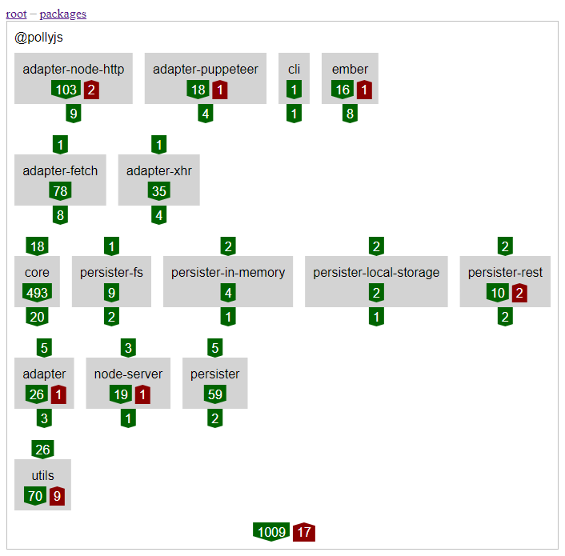
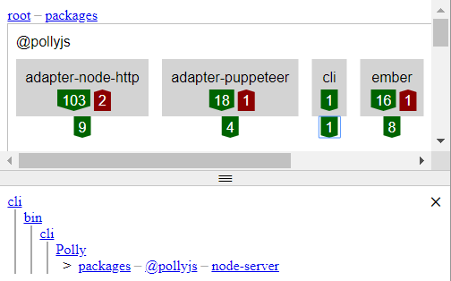
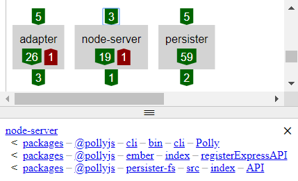
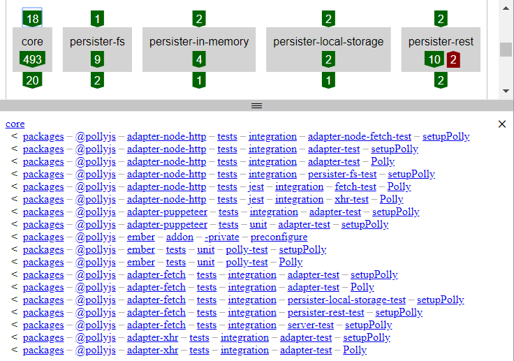
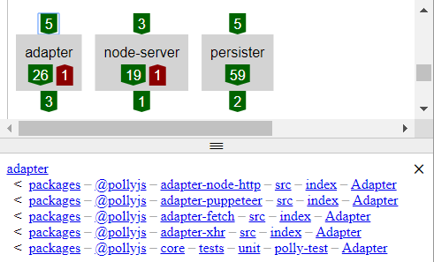

Polly.JS case study
This case study of the JavaScript library Polly.JS is intended as an introduction to Eunice because Polly.JS doesn't require any configuration and has uni-directional dependencies.
Alternatively, for a demonstration of Eunice on a larger code base, that requires configuration and has bi-directional dependencies, there's also a React case study.
getting started
Eunice analyzes JavaScript source code, so I cloned the 0003c0e commit from the GitHub repository https://github.com/Netflix/pollyjs.
git clone https://github.com/Netflix/pollyjs.git pollyjs-eunice
cd pollyjs-eunice
git reset --hard 0003c0e
Eunice can be downloaded from NPM and run without installing using NPX:
npx eunice
You will be prompted to accept a EULA. Eunice is free to use on open source projects, and its free to use for education and training. Therefore contributions to Polly.JS and following along with this case study both qualify. There is also an evaluation period to try Eunice out on closed source commercial software.
uni-directional dependencies
The analysis will output a eunice.html file. Opening the file in a browser shows the following:

On the left a text editor is displaying 6,927 lines of YAML produced by Eunice's analysis of Polly.JS.
On the right is a graphical representation of all the dependencies and the root directories in Polly.JS. The green and red count arrows represent the dependencies, categorized as follows:
The 1,102 matching (green) and only 22 (red) mismatching dependencies shows that Eunice has found the vast majority of dependencies in Polly.JS as uni-directional. The few bi-directional dependencies that have been found are deep inside the directory structure (e.g. the 17 in packages) and unlikely to be of much, if any consequence.
stacks
There isn't a stack in the root directory shown above; however, selecting the packages/@pollyjs sub-directory will show one for its contents:
The arrangement of 5 levels shown above isn't specified in the source code and has been inferred by Eunice. It will only do this when items have uni-directional dependencies.
investigation
Even without any prior knowledge of how Polly.JS works, the relationship between many of the directories seems intuitive. For example:
- cli is in the top level as its likely to be a way of running other things.
- core is in the middle level, its probably built on by other parts of the project, but also uses some of the lower level functionality it shares with the rest of the project.
- adapter and persister are in the second to bottom level. Their names are less specific than the other adapters and persisters, so the others probably extend them.
- utils is on its own in the bottom level, as it is used elsewhere, but doesn't use anything itself.
The dependencies that Eunice has found can be investigated by selecting the count arrows, this lists the dependencies included in them. For example the single dependency below cli is on node-server:
Eunice shows count arrows for both sides of a dependency relationship. The dependency in the example above is also included as a dependent in the count of 3 above node-server:
The dependents arrow above core can also be selected to investigate how its used by the items above:
The dependents of core seem to be only using it for integration testing and the items above don't appear to use it at runtime. Looking at the Polly.JS getting started page, you can see instead the adapters and persisters above are registered with core at runtime. This looks like a potential inverted dependency in a form of plug-in relationship.
The same kind of investigation of dependents can be done for adapter:
The dependency list shows several of the adapters above use it and looking at the Polly.JS custom adapter page confirms at least fetch and xhr extend it.
There is a dependency from core on adapter, but this is just for testing.
packages, tests and sub-directories
The packages/@pollyjs directory I've investigated above is used for the creation of NPM packages, so its not surprising to see that, at least at runtime, there are uni-directional dependencies. However, what appear to be integration tests across those packages also have uni-directional dependencies.
Eunice could also be used to investigate inside the sub-directories of packages. Here there is the potential for runtime bi-directional dependencies across the directory structure. As there doesn't appear to be any in Polly.JS I haven't done that in this case study. If you want a demonstration of this please see the React case study.
You can interact with the Eunice analysis for this case study here
why use Eunice
Even though Eunice shows Polly.JS as already having uni-directional dependencies, using Eunice can still be beneficial while working on such a project.
Eunice could show potential for additional structure, making the code more self descriptive, by highlighting commonality that could be named in a new group, for example by moving files and directories into a new directory.
People new to the project might not realise that dependencies are coordinated and consistent with the directory structure. Viewing the structure and dependencies with Eunice could help raise awareness.
Instead of Eunice inferring stacks, they could be specified in source control, formalizing the relationships and making it clear to everyone they are intentional.
comment on dev.to
also featured on hackernoon.com